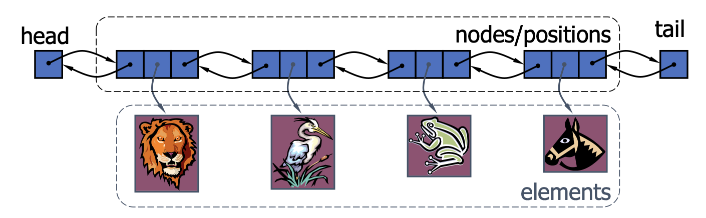

2 Linked List, Stack, and Queue
Coding
Java
Data Structure
Linked List
Stack
Queue
This lecture introduces the basic concepts of linked list, stack, and queue in Java.
Singly Linked List
Definition 1 A singly linked list is a concrete data structure consisting of a sequence of nodes, starting from a head pointer.
- Each node stores:
- element
- link to the next node
public class SinglyLinkedList<E> implements Interable<E> {
/* Nested class */
private static class Node<E> {
private E element;
private Node<E> next;
public Node(E e, Node<E> n) {
element = e;
next = n;
}
public E getElement() {
return element;
}
public Node<E> getNext() {
return next;
}
public void setNext(Node<E> n) {
next = n;
}
} /* End of nested class */
private Node<E> head = null;
private Node<E> tail = null;
private int size = 0;
public SinglyLinkedList() { }
}- Inserting at the head:
- Build new node
- Have new node point to the old head
- Update head to point to new node
- Inserting at the tail:
- Build new node
- Have old last node point to new node
- Update tail to point to new node
- Removing at the head:
- Update head to point to the next node in the list
- Allow garbage collector to reclaim the former first node
- Removing at the tail: Time complexity = \(\mathcal{O}(n)\)
- Update tail to point to the second last node in the list (require list traversal)
- Update the previous node’s next variable to null
- Allow garbage collector to reclaim the former last node
- Removing at any non-head node: Time complexity = \(\mathcal{O}(n)\)
Doubly Linked List
- A doubly linked list can be traversed forward and backward.
- Nodes store:
- element
- link to the previous node
- link to the next node
- Special tail and head nodes

public class DoublyLinkedList<E> implements Interable<E> {
/* Nested class */
private static class Node<E> {
public E element;
public Node<E> previous;
public Node<E> next;
public Node(E e, Node<E> p, Node<E> n) {
element = e;
previous = p;
next = n;
}
} /* End of nested class */
private Node<E> head;
private Node<E> tail;
private int size = 0;
public DoublyLinkedList() {
head = new Node<E>(null, null, null);
tail = new Node<E>(null, head, null);
head.next = tail;
}
}- Deletion: remove a node
nfrom a doubly linked list: Time complexity = \(\mathcal{O}(1)\)
public E delete(Node<E> n) {
n.previous.next = n.next;
n.next.previous = n.previous;
size--;
return n.element;
}- Insertion: insert a new node,
q, betweenpand its successor: Time complexity = \(\mathcal{O}(1)\)
public void insert(E e, Node<E> previous, Node<E> next) {
Node<E> current = new Node<E>(e, previous, next);
previous.next = current;
next.previous = current;
size++;
}- Compare Array List and Linked List (Time complexity comparison)
| Singly Linked List | Doubly Linked List | Array List | |
|---|---|---|---|
| Insert at head | \(\mathcal{O}(1)\) | \(\mathcal{O}(1)\) | \(\mathcal{O}(n)\) |
| Remove at head | \(\mathcal{O}(1)\) | \(\mathcal{O}(1)\) | \(\mathcal{O}(n)\) |
| Insert at tail | \(\mathcal{O}(n)\) | \(\mathcal{O}(1)\) | \(\mathcal{O}(1)\) |
| Remove at tail | \(\mathcal{O}(n)\) | \(\mathcal{O}(1)\) | \(\mathcal{O}(1)\) |
| Indexing | \(\mathcal{O}(n)\) | \(\mathcal{O}(n)\) | \(\mathcal{O}(1)\) |
- Doubly Linked List (compared to Singly Linked List)
- requires more space to hold the extra pointer
- needs more time for operating this extra pointer.
Stack
Definition 2 A stack is a collection of objects that are inserted and removed according to the last-in, first-out (LIFO) principle.
- Applications of Stacks
- Direct applications:
- Page-visited history in a Web browser
- Undo sequence in a text editor
- Chain of method calls in the Java Virtual Machine
- Parentheses matching
- HTML Tag Matching
- Indirect applications:
- Auxiliary data structure for algorithms (e.g. recursion, DFS)
- Direct applications:
public interface Stack<E> {
/**
* @return the number of element in the stack.
*/
int size();
/**
* @return true if the stack is empty, false otherwise.
*/
boolean isEmpty();
/**
* @return the top element in the stack, null if the stack is empty.
*/
E top();
/**
* Add an element to the top of the stack.
* @param e the element to be added.
*/
void push(E e);
/**
* Remove and return the top element from the stack.
* @return the top element in the stack, null if the stack is empty.
*/
E pop();
}- Array-based Stack Implementation
public class ArrayStack<E> implements Stack<E> {
private static final int CAPACITY = 1000;
private int t = -1; // index of the top element
private E[] data;
public ArrayStack() {
this(CAPACITY);
}
public ArrayStack(int capacity) {
data = (E[]) new Object[capacity];
}
public int size() {
return t + 1;
}
public boolean isEmpty() {
return t == -1;
}
public E top() {
if (isEmpty())
return null;
return data[t];
}
public E pop() {
if (isEmpty())
return null;
E answer = data[t];
data[t] = null;
t--;
return answer;
}
public void push(E e) {
if (size() == data.length)
throw new IllegalStateException("Stack is full");
data[t+1] = e;
t++;
}
}- Singly Linked List-based Stack Implementation
pop()is equal toremoveFirst()in Singly Linked List.push()is equal toaddFirst()in Singly Linked List.
Queue
Definition 3 A queue is a collection of objects that are inserted and removed according to the first-in, first-out (FIFO) principle.
- Applications of Queues
- Direct applications:
- Waiting lists
- Access to shared resources (e.g., printer)
- Indirect applications:
- Auxiliary data structure for algorithms (e.g., BFS)
- Component of other data structures (e.g., priority queues)
- Direct applications:
public interface Queue<E> {
/**
* @return the number of element in the queue.
*/
int size();
/**
* @return true if the queue is empty, false otherwise.
*/
boolean isEmpty();
/**
* @return the first element in the queue, null if the queue is empty.
*/
E first();
/**
* Add an element to the end of the queue.
* @param e the element to be added.
*/
void enqueue(E e);
/**
* Remove and return the first element from the queue.
* @return the first element in the queue, null if the queue is empty.
*/
E dequeue();
}- Array-based Queue Implementation (circular array)
public class ArrayQueue<E> implements Queue<E> {
private int f = 0;
private int size = 0;
private E[] data;
private static final int CAPACITY = 1000;
public ArrayQueue() {
this(CAPACITY);
}
public ArrayQueue(int capacity) {
data = (E[]) new Object[capacity];
}
public int size() {
return size;
}
public boolean isEmpty() {
return size == 0;
}
public E first() {
return data[f];
}
public E dequeue() {
if (isEmpty())
return null;
E answer = data[f];
data[f] = null;
f = (f + 1) % data.length;
size--;
return answer;
}
public void enqueue(E e) {
if (size == data.length)
throw new IllegalStateException("Queue is full");
data[(f + size) % data.length] = e;
size++;
}
}- Extend to dynamic array
public void enqueue(E e) {
if (size == data.length) {
E[] temp = (E[]) new Object[2 * data.length];
int cur_front = f;
for (int k = 0; k < size(); k++) {
temp[k] = data[cur_front%data.length];
cur_front++;
}
f = 0;
data = temp;
}
data[(f + size) % data.length] = e;
size++;
}- Queue implemented by Singly Linked List
enqueue()is equal toaddLast()in Singly Linked List.dequeue()is equal toremoveFirst()in Singly Linked List.
public class LinkedListQueue<E> implements Queue<E> { private SinglyLinkedList<E> ll = new SinglyLinkedList(); public int size() { return ll.size(); } public boolean isEmpty() { return size() == 0; } public E first() { return ll.first(); } public E dequeue() { return ll.removeFirst(); } public void enqueue(E e) { ll.addLast(e); } }